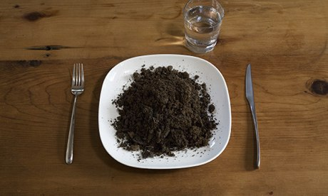

Mom's Great Depression Dirt
A Great Depression Classic

When the kids are hungry and you have no money, there is nothing more
filling then a nice plate of dirt. This elegant recipe is good for
those on a tight budget, or those with an ample money pile!
This recipe is incredibly easy to make, and is prepare in under two
minutes. It also requires very little season (but we will get to that
later). Lets get to it! You will need the following ingridients:
- 1 Twelve Inch plate
- 1 fork
- 1 butter knife
- 2 cups of top soil (or whatever dirt you have on-hand)
- salt and pepper to taste
- 1 Glass of water
Instructions
- Set knife and fork exactly 12" apart. Measure or the recipe will not
turn out
- Set plate directly in the middle between the knife and fork
- Place water glass in upper right corner
- fill glass with water
- Retrieve dirt from the garden. Mix thoroughly with air
- Place 2 cups of dirt on the plate
- Season with salt and pepper and enjoy!